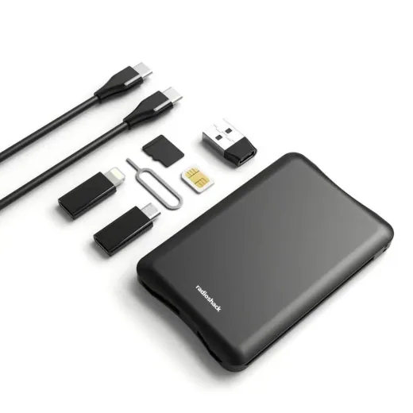

Precio en cada tienda
| Tienda | Precio | Antes | Disponibilidad | |
|---|---|---|---|---|
| La Curacao | L 295 | — | Disponible | Ver en tienda › |
Precios referenciales tomados de cada tienda el 21 de noviembre de 2026. El precio válido es el que muestra la tienda al comprar.
Otros cargadores y cables Radioshack
 Adaptador RadioShack 2605144 USB tipo C BlancoL 295En 2 tiendas · más barato en La Curacao
Adaptador RadioShack 2605144 USB tipo C BlancoL 295En 2 tiendas · más barato en La Curacao Cargador de Baterías Inteligente RadioShack 2309332L 297En 2 tiendas · más barato en RadioShack
Cargador de Baterías Inteligente RadioShack 2309332L 297En 2 tiendas · más barato en RadioShack Cable trenzado tipo-C a tipo-C Radioshack 4203253 1.8 m gris metálicoL 300En 2 tiendas · más barato en La Curacao
Cable trenzado tipo-C a tipo-C Radioshack 4203253 1.8 m gris metálicoL 300En 2 tiendas · más barato en La Curacao Cable HDMI 2.1 8K con Ethernet RadioShack 1503285 6 pies NegroL 290En 2 tiendas · más barato en La Curacao
Cable HDMI 2.1 8K con Ethernet RadioShack 1503285 6 pies NegroL 290En 2 tiendas · más barato en La Curacao Cable de computadora RadioShack 6 pies Negro 1503299L 300En La Curacao
Cable de computadora RadioShack 6 pies Negro 1503299L 300En La Curacao Cargador Dual Inalámbrico para Smartwatch RadioShack 5V 2733366L 280En 2 tiendas · más barato en La Curacao
Cargador Dual Inalámbrico para Smartwatch RadioShack 5V 2733366L 280En 2 tiendas · más barato en La Curacao Cable HDMI 2.0 4K con Ethernet Macho a Macho Redondo RadioShack 1503278 20 Pies NegroL 280En La Curacao
Cable HDMI 2.0 4K con Ethernet Macho a Macho Redondo RadioShack 1503278 20 Pies NegroL 280En La Curacao Cargador de carro RadioShack 40 W BlancoL 327En 2 tiendas · más barato en RadioShack
Cargador de carro RadioShack 40 W BlancoL 327En 2 tiendas · más barato en RadioShack